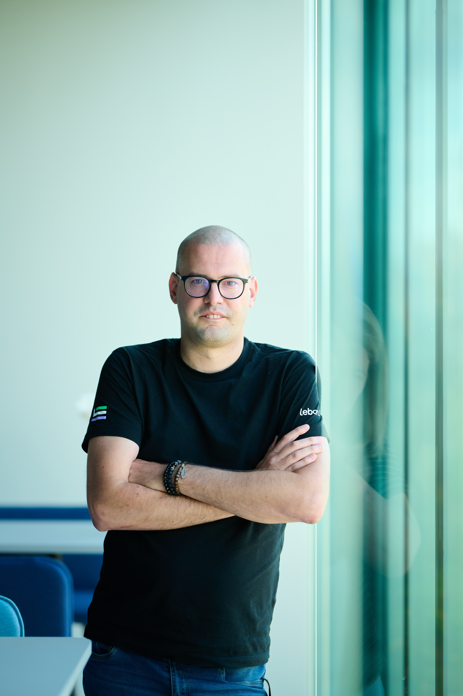

Alain Seys
Systems Engineer
Alleenstaand · Dochter 9 jaar · Rijbewijs B · 37 jaar
Profiel
IT/System Engineer met een sterke passie voor infrastructuur, automatisering en security. Ruime ervaring met Linux-, Windows- en virtualisatieomgevingen, met focus op standaardisatie, tooling en moderne DevOps-principes. Gedreven om omgevingen schaalbaar, veilig en onderhoudbaar te maken.
Vaardigheden
Linux90%
Ansible85%
Veeam/Backup90%
Docker80%
Linux Hardening75%
Windows Server85%
Active Directory / Azure AD85%
SQL60%
3 Tier Administration85%
VMware80%
Hyper-V70%
Proxmox75%
Python75%
C#55%
PowerShell75%
NetBox70%
Storage (VNX, PowerStore)70%
Zero Trust65%
Office 36580%
SharePoint65%
Werkervaring
IT Consultant — Lebon-IT
Augustus 2026 — heden
- Onderhoud en beheer van datacenters
- Proactief onderhoud van de volledige omgeving
- Beheer van VMware & VME
- Office 365- en Azure-implementaties
- Cybersecurity: Zero Trust, 3-tier administration en Linux-hardening
- Beheer van HPE SimpliVity-storage
- Back-upbeheer en upgrades van de back-upinfrastructuur
- Beheer van Citrix-farms
- Securitybeheer en patchmanagement
- Patchen en onderhouden van firewalls (FortiGate, pfSense, Check Point en SonicWall)
- Technische ondersteuning bieden aan klanten
System Engineer — Van Marcke
Augustus 2023 — 2026
- Onderhoud en beheer van datacenters
- Automatisering van infrastructuur met Ansible
- Tooling met Python, NetBox en Ansible
- Standaardisatie van VM-installaties (Linux & Windows)
- Beheer van VMware & Proxmox
- Containerisatie met Docker
- Cybersecurity: Zero Trust, 3-tier administration en Linux-hardening
- Storagebeheer (VNX, PowerStore)
- Back-upbeheer en upgrades van de back-upinfrastructuur
System Engineer — Biopack BV, Gistel
Januari 2016 — Augustus 2023
- Interne IT-support
- Ontwikkelen van interne tools (SAP Business One)
- Netwerkbeheer (AD, DNS, DHCP, DFS, Office 365, Azure AD)
- Webservers en patching
- Ticketing, documentatie en assetmanagement
- VoIP (3CX)
- Optimalisatie van IT-security
- Back-upbeheer met Veeam
IT Manager — R&G Management, Brugge
Juni 2015 — December 2015
- Interne ondersteuning
- Ontwikkeling van softwareoplossingen
- Helpdesk
Internal IT — Media Markt, Brugge
April 2015 — Juni 2015
- Interne en externe IT-support
IT Consultant — Komma Board, Mechelen
Juni 2014 — Oktober 2014
- Remote support voor AZ Sint-Jan Brugge
- Nieuwe installaties
- User provisioning
- Assetmanagement
Opleiding
- Kantooradministratie & Gegevensbeheer — Ensor Instituut (2007–2011)
- Toegepaste Informatica & Netwerkbeheer — Howest (2011–2013, niet voltooid)
Hobby
- IT-support: Radio Noordzee105FM
- Linux: site-to-site-VPN tussen verschillende zendlocaties, de radiomast en de cloudserver
- Linux: securityaudits en patching
- Linux: vernieuwing van SSL-certificaten
- Linux: configuratie van componenten zoals Apache, PHP, MySQL, DAB, Let’s Encrypt, Fail2ban en Icecast
- Patching van Windows-systemen op zendlocaties
- Scripting: PHP-script voor trackinformatie in de webplayer en rapportage naar MySQL voor SABAM
- Muziek luisteren
- Gaming
- Fitness
Talen
- Nederlands
- Engels
- Frans
Cursussen
- 3CX Basic Certified Engineer (2018)
- Magento 2 Basic Developer (2022)
- Fortinet NSE 3 Network Security Associate (2026)